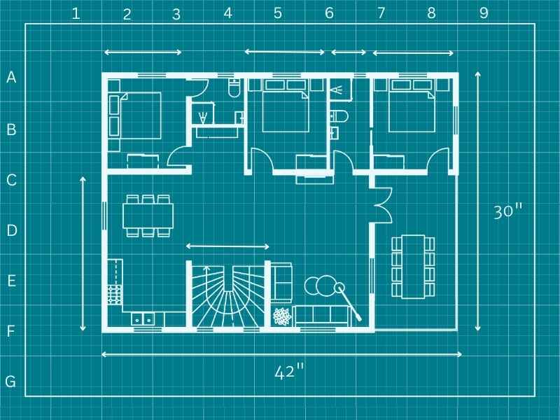

Day 2 What are designed experiments?
May 27th, 2025
- Differences between observational data and data generated by controlled experiments.
- The role of experiment design in causal inference.
- The golden rules of designed experiments:
- Randomization
- Replication
- Local control (blocking)
- Experimental unit: smallest unit to which a treatment is independently assigned/applied.
- Observational unit: smallest unit on which observations are made.
2.1 Types of designs - the basics
There are several ways to carry out an experiment. The way we carry out an experiment is important because it will establish the blueprint for how the data are generated.

Figure 2.1: A blueprint is to a building what the experimental design is to the data. Source
2.1.1 Completely randomized design (CRD)

Figure 2.2: Schematic description of an experiment with a completely randomized design